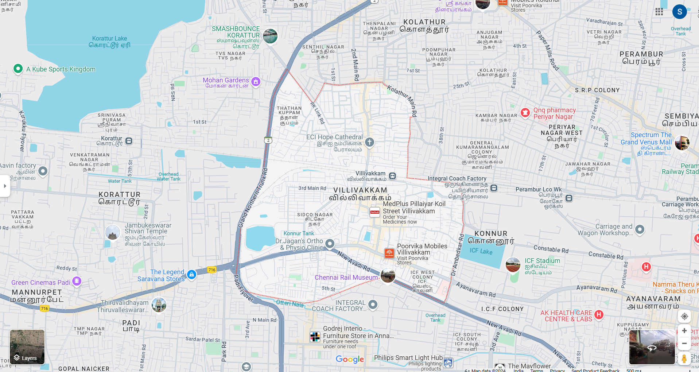

Villivakkam is a neighbourhood of Chennai, Tamil Nadu, India. It is served by the Villivakkam railway station on the Chennai Central–Arakkonam suburban section. Villivakkam is the largest state assembly constituency in Tamil Nadu in terms of number of voters.The real name of Villivakkam is Vilvaaranyam. An old Shiva temple here is built by Sage Agasthiyar and there are many vilvam (bael) trees here, hence it earned the name Vilva Aaranyam, which means the "jungle of bael trees". As time passed, the name changed into Villivakkam.
